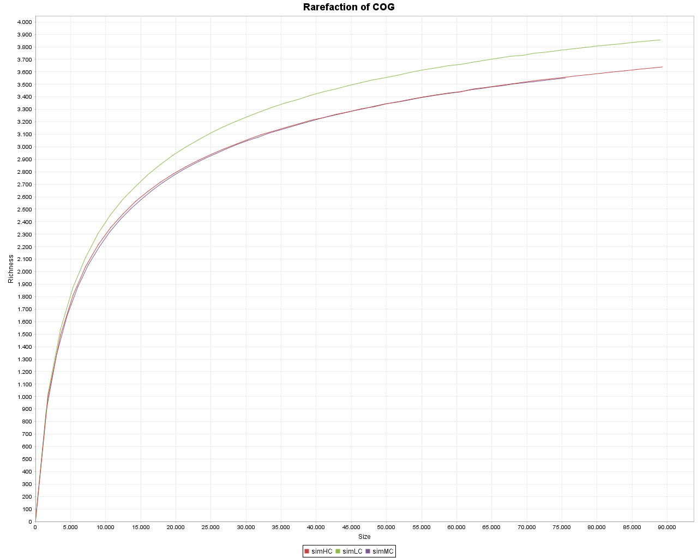
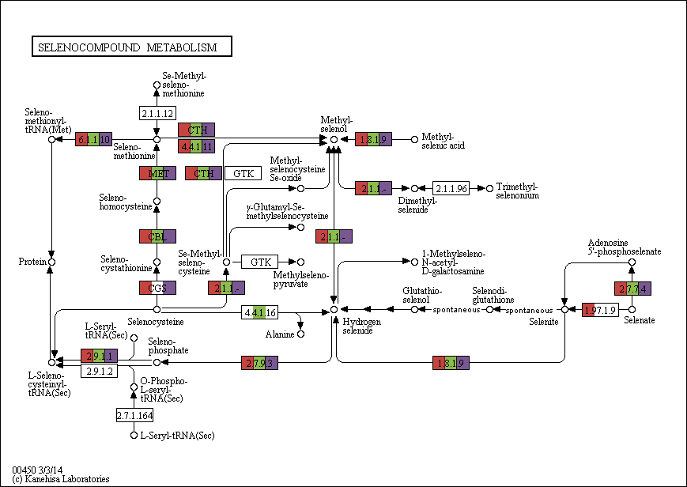
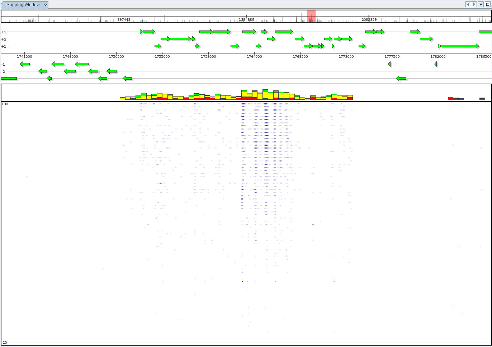
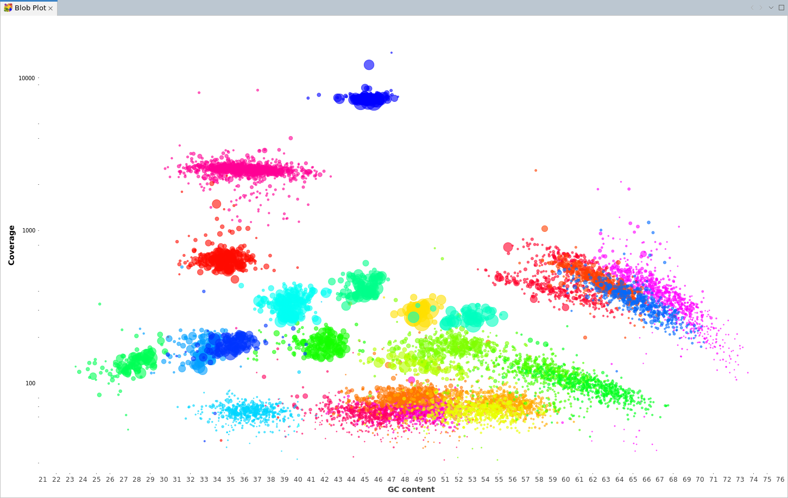
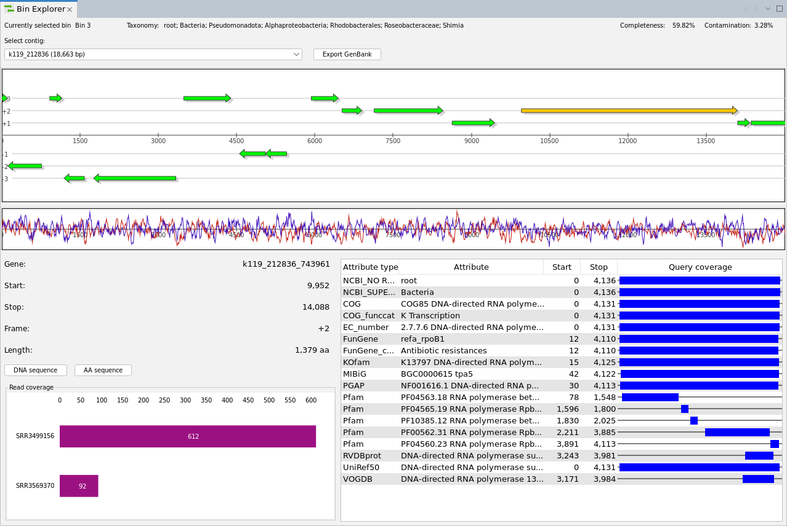

❮
❯
The characterization of microbial communities based on sequencing and analysis of their genetic information has become a popular approach also referred to as metagenomics; in particular, the recent advances in sequencing technologies have enabled researchers to study even the most complex communities. Metagenome analysis, the assignment of sequences to taxonomic and functional entities, however, remains a tedious task: large amounts of data need to be processed. There are a number of approaches addressing particular aspects, but scientific questions are often too specific to be answered by a general-purpose method. We present MGX, a flexible and extensible client/server-framework for the management and analysis of metagenomic datasets; MGX features a comprehensive set of adaptable workflows required for taxonomic and functional metagenome analysis, combined with an intuitive and easy-to-use graphical user interface offering customizable result visualizations. At the same time, MGX allows to include own data sources and devise custom analysis pipelines, thus enabling researchers to perform basic as well as highly specific analyses within a single application. With MGX, we provide a novel metagenome analysis platform giving researchers access to the most recent analysis tools. MGX covers taxonomic and functional metagenome analysis, statistical evaluation and a wide range of visualizations easing data interpretation. Its default taxonomic classification pipeline provides equivalent or superior results in comparison to existing tools.
The latest version of the MGX application is provided as a platform-independent .zip archive from the releases page. No installation is required, just extract the .zip archive. If you are a previous user of MGX 1.0, make sure to download the latest MGX-(date).zip file; for MGX 2.0, all releases are prefixed with MGX2 followed by a timestamp.
The MGX user guide is available as an online HTML or PDF version. MGX is academic research software; no warranty is expressed or implied.
If you want to try out MGX 2.0, we offer two public demonstration projects:
To access these example projects, download the MGX 2.0 application and log in with username "mgxdemo" and password "mgxdemo". Please note that only read access is permitted here, i.e. you can explore all precomputed results and inspect the assemblies, but wont be able to initiate new analyses or delete existing data.
We operate and maintain two one public MGX server instances hosted at the Bioinformatics and Systems Biology group at JLU Giessen
and Center for Biotechnology, Bielefeld University. To
obtain a protected project for analysis of own metagenome data, please
get in touch with us and provide the following
information:
All data submitted to MGX is kept confidential; we encourage submission of metadata and sequence datasets to the public INSDC databases.
The MGX source code for the client library, GUI and all required server components is publicly available from the GitHub repository.
MGX 2.0: Shotgun- and assembly-based metagenome and metatranscriptome analysis from a single source
Sebastian Jaenicke, Sonja Diedrich, and Alexander Goesmann
bioRxiv 2023.09.21.558800
DOI: 10.1101/2023.09.21.558800
Flexible metagenome analysis using the MGX framework
Sebastian Jaenicke, Stefan P. Albaum, Patrick Blumenkamp, Burkhard Linke, Jens Stoye and Alexander Goesmann
Microbiome 2018 6:76
DOI: 10.1186/s40168-018-0460-1
Export citation in BibTeX or EndNote format.
Funding for the operation and maintenance of MGX is provided by the
German Federal Ministry of Education and Research (BMBF) project
Bielefeld-Gießen Center for Microbial Bioinformatics - BiGi
(grant 031A533) within the
German Network for Bioinformatics Infrastructure (de.NBI).